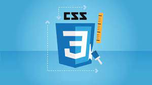

CSS (Cascading Style Sheets — Folhas de Estilos em Cascata) é uma extensão da HTML, uma linguagem de estilo, ou seja, fazendo o uso dessa linguagem é possível definir como o conteúdo dos elementos HTML serão apresentados na página da Web. Essa extensão foi incorporada à linguagem HTML a partir de sua quarta versão em 1997.

O CSS3 (que vamos aprender) é a segunda versão da linguagem CSS.
Ou seja, se você tivesse 10 tipos diferentes de fontes em uma mesma página, então teria de fazer esta formatação 10 vezes. Até que fazer isto em uma só página, tudo bem, mas se o site tivesse 100 páginas então seria muito trabalhoso manter e alterar estas fontes, não ac
